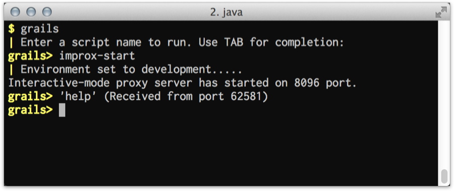

2 Getting Started - Reference Documentation
Authors: Yasuharu NAKANO
Version: 0.1
Table of Contents
2 Getting Started
This plugin's architecture is very simple. When you execute the grails script ofimprox-start on an interactive mode which run up in advance,
it opens and listens a port (default 8096).
Then, it executes a command on the interactive mode when receiving from a client.It uses a simple protocol on TCP, so you can access by variety clients and even make your own new client.
2.1 Install Client Scripts into your environment
Execute the following command:grails improx-install-resources
improx-resources directory including client scripts is expanded.improx-resources/
└── scripts
├── improxClient.groovy
├── improxClient.sh
├── improxSmartInvoker.groovy
└── improxSmartInvoker.sh~/.grails/improx or ~/bin.
If you deploy it to an appropriate path, you don't have to install the scripts whenever you use it on new project.
So I recommend that at least it's not under the application project directory.
2.2 Start Server
Run the improx proxy server on interactive mode:grails> improx-start Interactive mode proxy server has started on 8096 port.
It doesn't support not on interactive mode.You can stop the server anytime using
improx-stop command.grails> improx-stop Interactive mode proxy server stopped.
2.3 Execute Command from Client
via HTTP
I don't know what kind of environment you have. So at first, I introduce the most general way to execute a command as client, using HTTP protocol. Improx plugin also supports for HTTP protocol, so you can easily execute a command using it.When you open the following URL on web browser:http://localhost:8096/help
 And a "received" message will be also shown on the console on which
And a "received" message will be also shown on the console on which improx-start has run:
You can execute any command as follows:http://localhost:8096/list-plugins http://localhost:8096/test-app%20unit:%20sample.SampleUnitTests
You have to make a command line encode by URL encoding when invoking via HTTP.
Shell Script
If shell script is available in your environment, you can use improxClient.sh.improxClient.sh help improxClient.sh test-app unit: sample.SampleUnitTests
Groovy Script
If there isgroovy command in your environment, you can use improxClient.groovy.groovy improxClient.groovy help groovy improxClient.groovy test-app unit: sample.SampleUnitTests
groovyclient of GroovyServ is strongly recommended to execute Groovy script.
If you've installed GroovyServ, you can do the above with groovyclient, as follows:groovyclient improxClient.groovy help groovyclient improxClient.groovy tes-app unit: sample.SampleUnitTests
It needs agroovyserverprocess to rungroovyclient. The first timegroovyclientruns, agroovyserverautomatically starts up. It takes a few extra seconds. Don't get angry. You can much faster run a script after second time.
2.4 Smart Invoker
A simple client as the above isn't convenient very much in order to invoke a test file from editors or IDEs, because it needs a complicated construction of arguments for each test type. So the improx plugin provides smart invoker scripts, which can invoke any.groovy file in an appropriate way.For giving more benefit, you should set up your editor or IDE to be able to integrate with this plugin.
See the next chapter.Shell Script
If shell script is available in your environment, you can use improxSmartInvoker.sh.improxSmartInvoker.sh /path/to/yourApp/test/unit/sample/SampleUnitTests.groovy --[1] improxSmartInvoker.sh /path/to/yourApp/test/integration/sample/SampleIntegTests.groovy --[2] improxSmartInvoker.sh /path/to/yourApp/test/functional/sample/SampleFuncTests.groovy --[3] improxSmartInvoker.sh /path/to/scriptDir/myTribialScript.groovy --[4]
[1]invokes 'test-app unit: sample.SampleUnitTests' on the interactive mode.[2]invokes 'test-app integration: sample.SampleIntegTests' on the interactive mode.[3]invokes 'grails test-app functional: sample.SampleFuncTests' as new standalone Grails process.[4]invokes 'groovy /path/to/scriptDir/myTribialScript.groovy' as a normal Groovy script. If you've istalled GroovyServ, thegroovyclientis automatically used instead ofgroovycommand.
Groovy Script
If there isgroovy command in your environment, you can use improxSmartInvoker.groovy.groovy improxSmartInvoker.groovy /path/to/yourApp/test/unit/sample/SampleUnitTests.groovy --[1] groovy improxSmartInvoker.groovy /path/to/yourApp/test/integration/sample/SampleIntegTests.groovy --[2] groovy improxSmartInvoker.groovy /path/to/yourApp/test/functional/sample/SampleFuncTests.groovy --[3] groovy improxSmartInvoker.groovy /path/to/scriptDir/myTribialScript.groovy --[4]
[1]invokes 'test-app unit: sample.SampleUnitTests' on the interactive mode.[2]invokes 'test-app integration: sample.SampleIntegTests' on the interactive mode.[3]invokes 'grails test-app functional: sample.SampleFuncTests' as new standalone Grails process.[4]invokes 'groovy /path/to/scriptDir/myTribialScript.groovy' as a normal Groovy script. If you've istalled GroovyServ, thegroovyclientis automatically used instead ofgroovycommand.